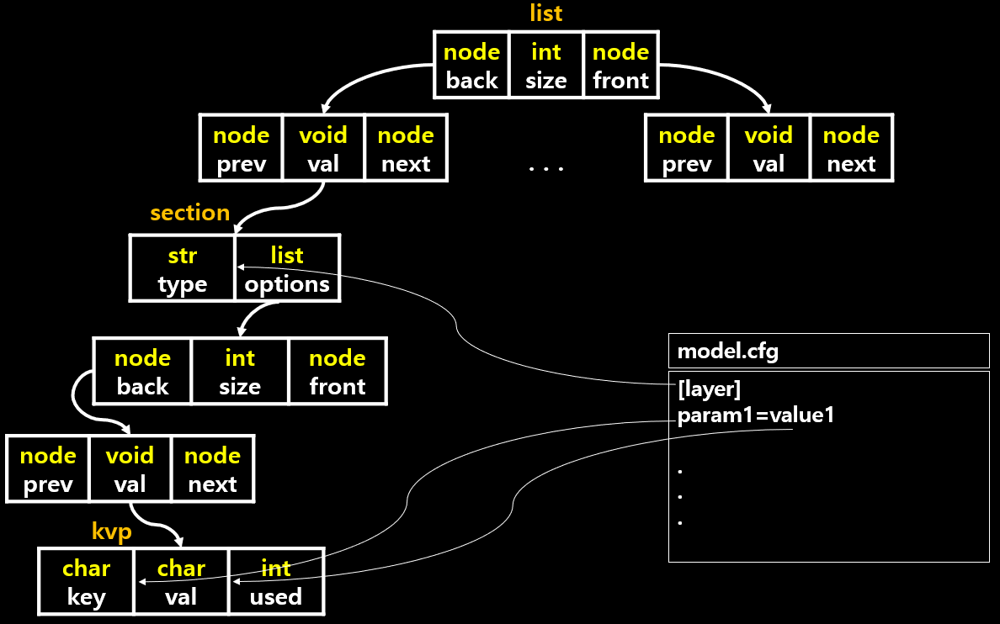

parser.c
parser는 compiler, interpreter의 구성 요소 중 하나로 입력 token에 포함 된 자료 구조를 구성하고 문법을 검사합니다. darknet에서는 cfg로 네트워크의 구조를 구성하고 문법을 검사하는데 사용 됩니다. 매우 중요하고 잘 짜여진 알고리즘 입니다.
여기서 cfg파일은 모델의 구조를 담고 있는 파일입니다. 파일의 구조를 보면 대략 아래와 같습니다.
[net]
param1=value1
param2=value2
param3=value3
[layer type]
param1=value1
param2=value2
[layer type]
param1=value1
param2=value2
괄호안에는 layer의 타입이 설정되어 있고 그 밑에는 해당 layer에 필요한 파라미터 값을 설정하도록 되어있습니다.
이렇게 모델의 구조를 설정하면 하나의 네트워크의 자료구조를 만들게 됩니다.
- network list는 root
- section list는 layer
- option list는 layer의 매개변수
라고 이해하고 읽어봅시다.
parse_network_cfg
network *parse_network_cfg(char *filename)
{
list *sections = read_cfg(filename); /// sections = cfg 파일 구조 리스트
node *n = sections->front; /// n = sections의 맨 앞 노드
if(!n) error("Config file has no sections");
network *net = make_network(sections->size - 1);
net->gpu_index = gpu_index;
size_params params;
section *s = (section *)n->val;
list *options = s->options;
if(!is_network(s)) error("First section must be [net] or [network]");
parse_net_options(options, net);
params.h = net->h;
params.w = net->w;
params.c = net->c;
params.inputs = net->inputs;
params.batch = net->batch;
params.time_steps = net->time_steps;
params.net = net;
size_t workspace_size = 0;
n = n->next; /// layer 부분 해석시작
int count = 0;
free_section(s); /// section 할당 해제
fprintf(stderr, "layer filters size input output\n");
while(n){
params.index = count;
fprintf(stderr, "%5d ", count);
s = (section *)n->val; /// section의 값
options = s->options; /// option 불러오기
layer l = {0};
LAYER_TYPE lt = string_to_layer_type(s->type); /// LAYER_TYPE 찾기
if(lt == CONVOLUTIONAL){
l = parse_convolutional(options, params);
}else if(lt == DECONVOLUTIONAL){
l = parse_deconvolutional(options, params);
}else if(lt == LOCAL){
l = parse_local(options, params);
}else if(lt == ACTIVE){
l = parse_activation(options, params);
}else if(lt == LOGXENT){
l = parse_logistic(options, params);
}else if(lt == L2NORM){
l = parse_l2norm(options, params);
}else if(lt == RNN){
l = parse_rnn(options, params);
}else if(lt == GRU){
l = parse_gru(options, params);
}else if (lt == LSTM) {
l = parse_lstm(options, params);
}else if(lt == CRNN){
l = parse_crnn(options, params);
}else if(lt == CONNECTED){
l = parse_connected(options, params);
}else if(lt == CROP){
l = parse_crop(options, params);
}else if(lt == COST){
l = parse_cost(options, params);
}else if(lt == REGION){
l = parse_region(options, params);
}else if(lt == YOLO){
l = parse_yolo(options, params);
}else if(lt == ISEG){
l = parse_iseg(options, params);
}else if(lt == DETECTION){
l = parse_detection(options, params);
}else if(lt == SOFTMAX){
l = parse_softmax(options, params);
net->hierarchy = l.softmax_tree;
}else if(lt == NORMALIZATION){
l = parse_normalization(options, params);
}else if(lt == BATCHNORM){
l = parse_batchnorm(options, params);
}else if(lt == MAXPOOL){
l = parse_maxpool(options, params);
}else if(lt == REORG){
l = parse_reorg(options, params);
}else if(lt == AVGPOOL){
l = parse_avgpool(options, params);
}else if(lt == ROUTE){
l = parse_route(options, params, net);
}else if(lt == UPSAMPLE){
l = parse_upsample(options, params, net);
}else if(lt == SHORTCUT){
l = parse_shortcut(options, params, net);
}else if(lt == DROPOUT){
l = parse_dropout(options, params);
l.output = net->layers[count-1].output;
l.delta = net->layers[count-1].delta;
}else{
fprintf(stderr, "Type not recognized: %s\n", s->type);
}
l.clip = net->clip;
l.truth = option_find_int_quiet(options, "truth", 0);
l.onlyforward = option_find_int_quiet(options, "onlyforward", 0);
l.stopbackward = option_find_int_quiet(options, "stopbackward", 0);
l.dontsave = option_find_int_quiet(options, "dontsave", 0);
l.dontload = option_find_int_quiet(options, "dontload", 0);
l.numload = option_find_int_quiet(options, "numload", 0);
l.dontloadscales = option_find_int_quiet(options, "dontloadscales", 0);
l.learning_rate_scale = option_find_float_quiet(options, "learning_rate", 1);
l.smooth = option_find_float_quiet(options, "smooth", 0);
option_unused(options);
net->layers[count] = l;
if (l.workspace_size > workspace_size) workspace_size = l.workspace_size;
free_section(s);
n = n->next;
++count;
if(n){
params.h = l.out_h;
params.w = l.out_w;
params.c = l.out_c;
params.inputs = l.outputs;
}
}
free_list(sections);
layer out = get_network_output_layer(net);
net->outputs = out.outputs;
net->truths = out.outputs;
if(net->layers[net->n-1].truths) net->truths = net->layers[net->n-1].truths;
net->output = out.output;
net->input = calloc(net->inputs*net->batch, sizeof(float));
net->truth = calloc(net->truths*net->batch, sizeof(float));
if(workspace_size){
//printf("%ld\n", workspace_size);
net->workspace = calloc(1, workspace_size);
}
return net;
}
- cfg파일을 parsing하여 network를 만들어주는 함수입니다.
read_cfg
list *read_cfg(char *filename)
{
FILE *file = fopen(filename, "r");
if(file == 0) file_error(filename);
char *line;
int nu = 0;
list *options = make_list();
section *current = 0;
while((line=fgetl(file)) != 0){
++ nu;
strip(line);
switch(line[0]){
case '[':
current = malloc(sizeof(section));
list_insert(options, current);
current->options = make_list();
current->type = line;
break;
case '\0':
case '#':
case ';':
free(line);
break;
default:
if(!read_option(line, current->options)){
fprintf(stderr, "Config file error line %d, could parse: %s\n", nu, line);
free(line);
}
break;
}
}
fclose(file);
return options;
}
fgetl: 파일에서 라인 읽기strip: 공백제거
cfg파일의 문자열을 list에 넣어줍니다. 전체 자료 구조는 아래와 같습니다.
